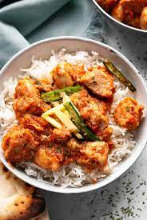

Breast karhai

Description
This will be your second or third meal,depending if you have taken protein shake in between,
Regardless, this will be your largest meal. so, prepare to indulge in all the spices.This meals
can be eaten with rice or with out.
I personally do not enjoy chicken breast, but they are the most protein packed budject friendly
meat there is on the market, I have found this way of eating more ejoyable and easier to stay with
in the long term.
Ingridients
- 8-12 onions
- 1 kg chicken Breast
- 5-8 Tomatoes
- 5 Green Chillies
- Karahi Masala
- 1 full garlic(contains multiple cloves)
- salt
Steps
- Chop onions
- Add it to your sauce pan till it browns
- Dice your chicken into cubes and add to onions
- leave it on low heat for 40 mins
- Add minced garlic and leave on heat for extra 10 mins
- Add chopped tomatoes along with finely chopped green chillies
- Add Karahi Masala
- Add Salt and leave the stew on low heat for another 1-2 hrs
- Present with Rice or with Bread
- INDULGE in the spice and garlic infused soft chicken breast